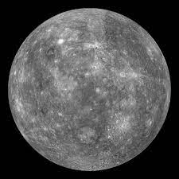

SOLAR SYSTEM
The sun and the nine planets make up the “family of the sun or the solar system”. There are some other members like the small celestial bodies revolving round the planets known as satellites. So far, forty nine satellites have been discovered in the solar system.
SUN.
The Sun is the largest object in our solar system. The Sun’s volume would need 1.3 million Earths to fill it. Its gravity holds the solar system together, keeping everything from the biggest planets to the smallest bits of debris in orbit around it. The hottest part of the Sun is its core, where temperatures top 27 million degrees Fahrenheit (15 million degrees Celsius). The Sun’s activity, from its powerful eruptions to the steady stream of charged particles it sends out, influences the nature of space throughout the solar system.
MERCURY
The smallest planet in our solar system and nearest to the Sun, Mercury is only slightly larger than Earth's Moon. From the surface of Mercury, the Sun would appear more than three times as large as it does when viewed from Earth, and the sunlight would be as much as seven times brighter. Mercury's surface temperatures are both extremely hot and cold. Because the planet is so close to the Sun, day temperatures can reach highs of 800°F (430°C). Without an atmosphere to retain that heat at night, temperatures can dip as low as -290°F (-180°C).
VENUS

Venus is the second planet from the Sun and is Earth’s closest planetary neighbor. It’s one of the four inner, terrestrial (or rocky) planets, and it’s often called Earth’s twin because it’s similar in size and density. These are not identical twins, however – there are radical differences between the two worlds.
EARTH

Earth is the only planet in the Solar System whose English name does not come from Greek or Roman mythology. The name was taken from Old English and Germanic. It simply means "the ground." There are, of course, many names for our planet in the thousands of languages spoken by the people of the third planet from the sun.
MARS

Mars is the fourth planet from the Sun – a dusty, cold, desert world with a very thin atmosphere. Mars is also a dynamic planet with seasons, polar ice caps, canyons, extinct volcanoes, and evidence that it was even more active in the past.The Latest from Mars Check Out Our New Space
Mineral Mapping Instrument on Mars Orbiter Mars is one of the most explored bodies in our solar system.
JUPITER
Fifth in line from the Sun, Jupiter is, by far, the largest planet in the solar system – more than twice as massive as all the other planets combined. Jupiter's familiar stripes and swirls are actually cold, windy clouds of ammonia and water, floating in an atmosphere of hydrogen and helium. Jupiter’s iconic Great Red Spot is a giant storm bigger than Earth that has raged for hundreds of years. One spacecraft – NASA's Juno orbiter – is currently exploring this giant world.
SATURN

Saturn is the sixth planet from the Sun and the second-largest planet in our solar system.The Latest Check Out Our New Space10 Things: Unsolved Mysteries of Saturn's Moons Adorned with thousands of beautiful ringlets, Saturn is unique among the planets. It is not the only planet to have rings – made of chunks of ice and rock – but none are as spectacular or as complicated as Saturn's.
URANUS
Uranus is the seventh planet from the Sun, and has the third-largest diameter in our solar system. It was the first planet found with the aid of a telescope, Uranus was discovered in 1781 by astronomer William Herschel, although he originally thought it was either a comet or a star. The Latest Check Out Our New Space The Uranian System It was two years later that the object was universally accepted as a new planet, in part because of observations by astronomer Johann Elert Bode.
NEPTUNE

Dark, cold, and whipped by supersonic winds, ice giant Neptune is the eighth and most distant planet in our solar system. The Latest New Horizons Team Discusses Discoveries from the Kuiper Belt New Study Finds Unexpected Temperature Changes on Neptune More than 30 times as far from the Sun as Earth, Neptune is the only planet in our solar system not visible to the naked eye and the first predicted by mathematics before its discovery. In 2011 Neptune completed its first 165-year orbit since its discovery in 1846. NASA's Voyager 2 is the only spacecraft to have visited Neptune up close. It flew past in 1989 on its way out of the solar system.